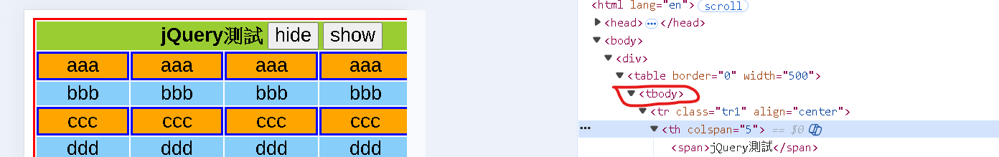

| jQuery測試 | ||||
|---|---|---|---|---|
| aaa | aaa | aaa | aaa | aaa |
| bbb | bbb | bbb | bbb | bbb |
| ccc | ccc | ccc | ccc | ccc |
| ddd | ddd | ddd | ddd | ddd |
| eee | eee | eee | eee | eee |
元件id可用dash(-)
注意: 瀏覽器預設在 table 裏加一個 tbody 。所以，使用child時，要寫成 table>tbody>tr
取得table內部tr，使用"大於"無效果(table>tr)，使用"空格"可行(table tr)
截圖如下:
select與option字型可分別設定
End.